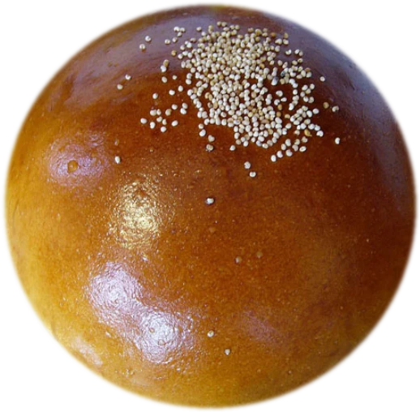

のれん
丸いパンには、
丸くおさまる暮らしを。
明治三十五年、京都の小さな路地に一台の石窯を据えたのが、まるぱん堂の始まりです。 当時から変わらないのは「まるいパンには、まるく丸くおさまる一日を願う」という初代の言葉。 戦火をくぐり、震災をくぐり、それでも毎朝同じ時刻に石窯へ火を入れる暮らしを、 四代にわたって続けてまいりました。
観光地の喧騒から少し離れた、静かな町家の一角。今日もまるぱん堂の暖簾は、 早朝六時に静かに掲げられます。

創業 明治三十五年 ・ 京都
丹波大納言小豆をじっくり炊き上げ、毎朝手ごねの生地でまるく包んだ、
まるぱん堂のまんまるあんぱん。
のれん
明治三十五年、京都の小さな路地に一台の石窯を据えたのが、まるぱん堂の始まりです。 当時から変わらないのは「まるいパンには、まるく丸くおさまる一日を願う」という初代の言葉。 戦火をくぐり、震災をくぐり、それでも毎朝同じ時刻に石窯へ火を入れる暮らしを、 四代にわたって続けてまいりました。
観光地の喧騒から少し離れた、静かな町家の一角。今日もまるぱん堂の暖簾は、 早朝六時に静かに掲げられます。
KODAWARI
小豆と、生地と、火。すべてに手間を惜しみません。
01
京都・丹波の契約農家から届く大粒の大納言小豆を、毎朝一釜ずつ炊き上げます。甘さは控えめに、豆本来の香りを活かした自家製あん。
02
国産小麦と京都の水だけで仕込む生地は、機械に頼らず職人の手で一つひとつ丸めます。もちりとした食感は、この工程から生まれます。
03
四代にわたって使い続ける石窯で、じっくりと焼き上げます。皮はぱりっと、中はふっくら。焼き色ひとつにも先代からの勘が生きています。
ACCESS